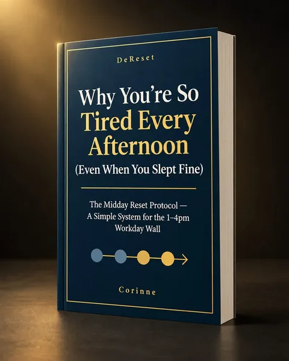
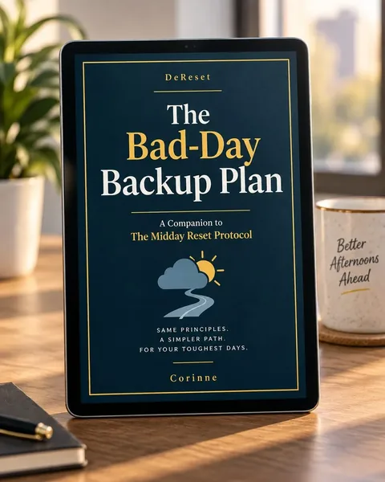

You're in
Thank you — your reset starts now
The Midday Reset Protocol · Delivered
Your Downloads
Download Section

Core guide
Why You're So Tired Every Afternoon (Even When You Slept Fine)
The Midday Reset Protocol — Core Guide (PDF)
File type: PDF · Available in your Gumroad Library

Bonus · Included
The Bad-Day Backup Plan
A companion for days when the standard reset isn't realistic — back-to-back meetings, travel, or limited privacy.
File type: PDF · Available in your Gumroad Library
Check your inbox. We also sent a backup copy to your email.
Save your files to your phone or computer now. Your files also stay in your Gumroad Library, so you can download them again anytime.
Your first reset
Start Here
Tonight
Open the guide and read the Afternoon Energy Audit near the front. It takes a few minutes, not an hour.
Before bed
Finish the Audit. Get specific about your own pattern: when the wall usually hits, what tends to happen around lunch, what you have already tried, what the rest of your afternoon actually requires from you.
Tomorrow
When lunch ends, open to the Reset Sequence Card page and run the Notice, Adjust, Activate, Transition sequence for the first time. You do not need to get it perfect. You just need to try it once, at the transition, on purpose.
A Note From Corinne
Closing Note
This will not change your afternoons after one read. It changes them once you actually run the reset at the transition, most workdays, for a couple of weeks. That is the whole method, nothing more dramatic than that.
I am rooting for your 1pm.
Corinne
30‑Day Guarantee
Try the Midday Reset Protocol for 30 days. If you use it as described and decide it isn't useful for your afternoons, email me within 30 days of purchase, and I'll refund your payment. No hoops.
The Midday Reset Protocol is an educational guide and behavioral system. It is not medical advice, diagnosis, or treatment. If you experience persistent, severe, or unusual fatigue, consult a qualified healthcare professional.
From DeReset
More Practical Resets
DeReset publishes focused guides for everyday resets — decisions, boundaries, money pressure, and trust. Clear steps. No theatre.
Explore the collection at dereset.com